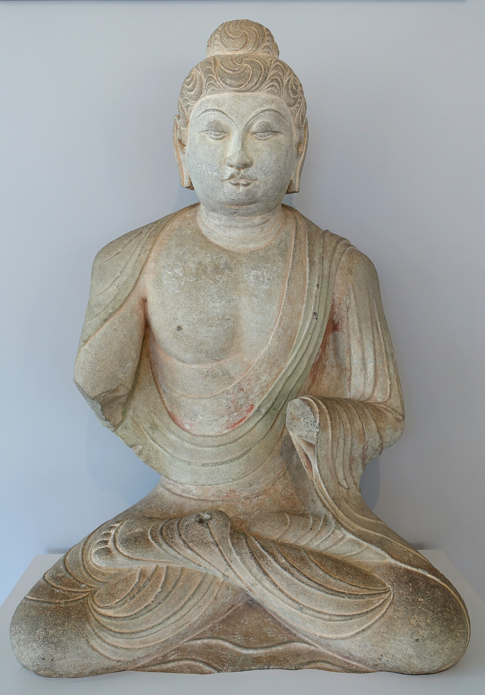
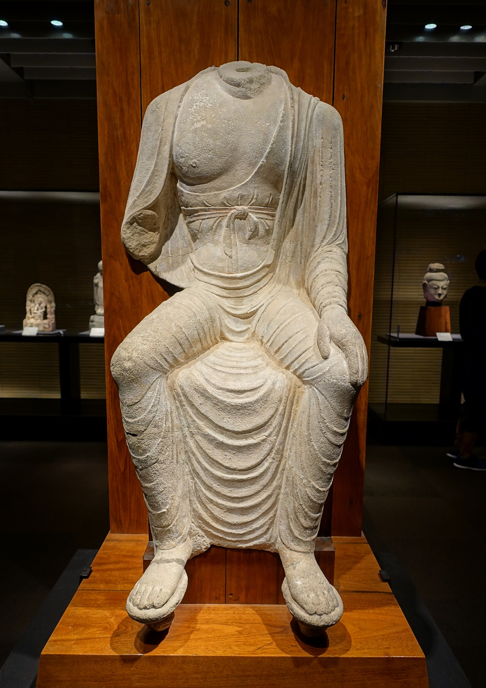

第 3 章
天龙山的无头佛
2021年7月24日，太原。但真正引人驻足的，是展柜中那尊石灰岩佛首——高四十四点五厘米，宽三十三点七厘米，面部轮廓饱满，唇角微抿，眼睑低垂。它背后的投影屏幕循环播放着天龙山第二十一窟北壁的现状：一尊无头佛像静坐莲台，颈部断口粗粝，凿痕清晰如昨。佛首与残躯之间，隔着数米距离、一层玻璃，以及将近一个世纪的离散。
在场者鼓掌，闪光灯亮起，回归仪式按程序推进。佛首回来了，但它与它离开近一百年的身体之间，没有任何物理接触。两者甚至没有被安排在同一空间内对视。屏幕上的洞窟影像，只是影像。
这一幕所呈现的，远不止一件文物的归还：佛首被凿下之后，经历了长途运输、转手交易、私人收藏、公开展出、学术研究、拍卖竞价，以及最终的捐赠回归。它携带的已不是一件石质文物本身，而是一整套异域赋予的身份标签、学术记录、市场估值和展示逻辑。
它留下的，是一具残躯，一处空洞的龛壁，以及一个无法通过仪式弥合的原境断裂。身体的残缺与象征性的“修复”，市场规则与民族情感，原境的丧失与再语境化的新意义，在这个回归场景中交织成一张难以简单裁决的网。---
天龙山石窟位于山西太原西南约四十公里处，开凿于东魏、北齐，鼎盛于隋唐。现存二十五个洞窟，雕刻佛教造像五百余尊，浮雕、藻井、壁画等一千一百四十余处。其中唐代造像以造型娴熟、比例匀称、衣纹流畅著称，在二十世纪初被外国学者称为“天龙山样式”。
这种样式并非孤立的艺术风格。它附着于一个完整的宗教空间内。佛像的姿态、手势、面容与所处的窟龛尺度、礼拜动线、光线角度紧密相连。主尊与肋侍之间的空间关系，天王与力士的护卫序列，飞天与藻井的上下呼应，共同构成一个自足的神圣体系。佛首不是独立的美学单元，而是一个完整身体的顶端，是这个身体与整个洞窟空间关系的焦点。
洞窟的开凿本身就是一个空间设计过程。工匠从山体岩壁向内掘进，预留出中央的礼拜区域，然后在岩壁上雕凿出龛室与造像。佛像不是被放入洞窟的，而是从岩体中生长出来的。它与山体共享同一块岩石的肌理与质地。佛首与佛身之间没有接缝，因为它们在物质上从未分离。这种物质上的连续性，赋予了造像以宗教意义上的完整性。
信众进入洞窟，面对的是从岩壁中浮现的完整佛身。目光从佛足向上移动，经过衣纹覆盖的身躯、施无畏印的手掌、微含的胸口，最终落低垂的眼睑和饱满的螺髻。这个视觉动线本身就是一种礼拜行为。佛首是这个动线的终点，也是整个空间的精神焦点。
二十世纪二十年代初，日本学者常盘大定、关野贞等人对天龙山进行了系统考察。他们拍摄的照片显示，当时洞窟内主尊、肋侍、弟子、天王等造像序列井然。虽有自然风化，整体结构完好。佛首与佛身一体，目光低垂，静观窟内。这些影像，是这些造像拥有完整身体的最后证明。
照片本身也是一种占有形式。日本学者的镜头框定了造像，将其从宗教空间中提取出来，转化为可复制、可传播的影像资料。这些照片后来发表在学术刊物上，成为西方和日本艺术史家研究天龙山样式的基础材料。照片中的佛首还连在身体上，但它的影像已经开始独立旅行。
盗凿在此后不久开始。1923年至1924年间，天龙山遭遇了大规模的人为破坏。盗凿者将目标集中在佛首。
头部最易切割，体积最小，市场价值最高。他们使用锯条和凿子，从颈部将佛首与身体分离。切口整齐，手法熟练。一批佛首被装入木箱，经太原运往天津，再从天津港装船，运往日本和欧美。
整个过程是有组织的。山中商会在日本和美国的销售网络提供了稳定的需求端。欧洲古董商的订单通过中间人传回中国。当地的联络人负责组织劳力、运输和通关。一条完整的链条将天龙山的石质身体切割、分散、定价、流通。
日本学者在考察报告中记录的完整造像，很快变成了各国博物馆和私人收藏中的独立藏品。第二十一窟北壁的主尊坐佛，就是在这个时期失去了头部。
盗凿的技术细节，可以从残留的断口上读出来。锯条在颈部两侧切入，向中心推进。当两侧切口接近相遇时，佛首的重量使其自然断裂。断口中心通常留下一个不规则的凸起，那是最后断裂时石质撕裂的痕迹。两侧的锯切面平滑整齐，与中心的撕裂面形成对比。这种断口形态，是天龙山佛首的共同特征。佛首离开后，身体留在原处。颈部断口暴露在空气中，风化加速。
天龙山佛首的流散并非一日之功。它们先被运入日本山中商会的仓库，随后分散到东京、大阪、京都的私人收藏和博物馆。一部分经日本转售欧美，进入纽约、波士顿、伦敦、巴黎、科隆的馆藏和私人手中。每一尊佛首在离开洞窟后，都被赋予新的身份：它不再是一组造像的一部分，而是一件独立的雕塑作品；不再是一个宗教空间中的崇拜对象，而是一件“亚洲艺术”的审美标本。
流散过程持续了数十年。天龙山佛首进入日本山中商会的仓库，随后分散到东京、大阪、京都的私人收藏和博物馆。一部分经日本转售欧美，进入纽约、波士顿、伦敦、巴黎、科隆的馆藏和私人手中。
每一尊佛首在离开洞窟后，都被赋予新的身份：它不再是一组造像的一部分，而是一件独立的雕塑作品；不再是一个宗教空间中的崇拜对象，而是一件“亚洲艺术”的审美标本。
山中商会的运作方式值得细看。这家成立于大阪的古董公司，在二十世纪初建立了横跨东亚、欧洲和北美的销售网络。它在纽约、波士顿、芝加哥、伦敦、巴黎设有分店，定期举办亚洲艺术展销会。天龙山佛首进入山中商会的库房后，被编号、拍照、编入销售目录。目录中的描述强调佛首的雕刻技法、面部表情的宁静感、石质的温润色泽——这些都是西方收藏家熟悉的审美范畴。
拍卖图录上的描述方式，清晰地呈现了这种转换。佛首被标注为“唐代石灰岩佛首”，附注来源“天龙山石窟”，估价根据品相、尺寸、面部表情的保存状态而定。
图录文字聚焦于雕刻技法、面容特征、风格流派，偶尔提及原属洞窟编号。这些编号本身也是日本学者在考察时编制的，与原境中的宗教功能毫无关系。切痕被审美化了。
拍卖行和收藏家将颈部断口视为“岁月痕迹”或“历史印记”，赋予其某种残缺美的价值。一尊无头佛像在洞窟中是创伤，一尊佛首在展台上却是“精品”。这种审美逻辑的转换，是再语境化过程中的关键一环。
这里有一个值得注意的反方论点。流散的支持者会说：如果佛首留在天龙山，它们可能毁于后来的战乱、灭佛运动或自然风化。日本和欧美的收藏机构提供了稳定的保存环境，让这些造像得以存续至今。
这个论点在技术上并非全无道理。天龙山石窟在二十世纪确实经历了自然劣化和人为破坏。留在原地的部分造像，风化程度远高于被盗的佛首。
但这个论点忽略了一个关键事实：盗凿本身就是破坏的最直接形式。佛首被锯下时，已经对造像造成了不可逆的伤害。颈部断口暴露后，残躯的风化速度显著加快。而佛首在海外的安全保存，并不能抵消这种初始暴力。
类似地，在新疆吐鲁番的柏孜克里克千佛洞，二十世纪初的盗凿行动不仅割取了大量壁画，剩余部分也遭到严重破坏。1928年，考古学家黄文弼随中瑞西北科学考查团前往考察时，已目睹这种破坏的后果。
保存与破坏在这里不是二选一，而是同一过程中的两个环节。日本收藏家根津嘉一郎购入了多尊天龙山佛首，其中一部分后来入藏根津美术馆。美国收藏家格伦维尔·温思罗普将佛首纳入其亚洲艺术收藏体系，后捐赠给哈佛大学艺术博物馆。大英博物馆、吉美博物馆、科隆东亚艺术博物馆，均有天龙山佛首入藏记录。
每一尊佛首的入藏，都伴随着学术研究。西方和日本学者对佛首进行测量、拍照、风格分析、年代断定，发表论文和展览图录。这些研究本身是严谨的，但它们建立在一个已经脱离原境的对象之上。学者们讨论佛首的“天龙山样式”，讨论其与龙门、响堂山风格的异同，讨论唐代佛教雕塑的美学特征。这些讨论很少回到石窟本身，很少追问佛首离开后洞窟里发生了什么。
解释权在这个过程中发生了转移。天龙山造像的意义，越来越多地由海外收藏机构和学者来定义。他们拥有实物，拥有研究条件，拥有发表渠道。而原境中的残躯和空龛，只是沉默的物证。博物馆的展陈方式进一步强化了这种转移。
进入二十一世纪，中国文物部门与民间力量开始系统追索流失海外的文物。天龙山佛首成为重点关注对象。追索方式多元：通过外交渠道提出返还要求，通过法律途径质疑非法出境文物的所有权，通过民间协商促成捐赠或购买，通过学术合作推动信息共享。
二十一世纪初，情况开始变化。中国文物部门和民间力量启动了流失海外文物的调查与追索工作。天龙山佛首成为重点关注对象。追索的方式多元：通过外交渠道提出返还要求，通过法律途径质疑非法出境文物的所有权，通过民间协商促成捐赠或购买，通过学术合作推动信息共享。
2008年，一尊天龙山佛首从美国私人收藏家手中购回，入藏山西博物院。这是较早成功的案例之一。此后，陆续有佛首通过捐赠、购买、协议返还等方式回到中国。每一次回归都伴随着媒体报道和公众关注，被赋予“国宝回家”的叙事意义。
但回归的复杂性，在每一尊佛首身上都有不同呈现。部分佛首回归后，无法安装回原窟。原因很具体：窟龛本身在近一个世纪的风化和人为影响下，结构已不稳定，强行复位可能导致岩体进一步损坏。佛首底部的切割面与残躯颈部的断口之间，存在尺寸误差。这不是因为切割不精确，而是因为两侧石质在分离后的风化速率不同。佛首一侧的石质保持紧密，切割面几乎维持原状；
残躯一侧的断口边缘则因风化而变得酥松，细小的矿物颗粒不断剥落。原来的接触面已经不存在了。
还有一些佛首，原属洞窟的编号已无法确认。当年盗凿时没有留下详细记录。日本学者的考察照片虽然提供了部分线索，但无法覆盖全部。一尊佛首回来了，却不知道它属于哪一具身体。它在博物馆展柜中陈列，标签上写着“天龙山石窟唐代佛首”，旁边是原窟照片——但这张照片可能并不对应它真正的来源。
回归有时依赖私人藏家的善意，而非制度性安排。某位藏家决定捐赠，某场拍卖中中方机构成功竞得，某个基金会愿意充当中间人促成协商。这些个案的成功背后，是一套不稳定的机制。每一次回归都需要重新协调、重新谈判、重新筹集资金。善意是珍贵的，但它无法保证下一尊佛首也能回来。
2021年7月的那尊佛首，正是通过海外华人藏家的捐赠得以回归。这位藏家在拍卖会上购得佛首后，主动联系中国文物部门，表达了捐赠意愿。经过数月的协商和法律程序，佛首最终被运回太原。
整个过程体现了个人善意在追索中的关键作用，也暴露了制度性渠道的有限。更微妙的问题在于，“回归”一词本身掩盖了文物在海外期间被研究、展示与赋予新意义的历史。佛首回来了，但它携带的异域标签并未消失。它在海外博物馆的入藏编号、展览记录、研究文献，构成了一个完整的“第二身份”。西方学者对它的断代、风格分析、美学评价，已经被写入艺术史教材和学术论文。这些知识生产不会因为佛首的物理回归而失效。
原境与再语境之间的对话，由此进入一个新阶段。回归仪式上的投影屏幕，是这个新阶段最直观的隐喻。佛首在展柜中，残躯在屏幕上。两者同在一个空间，却分属不同的物质世界和意义系统。观众看到的是并置——但这种并置本身，恰恰揭示了合体的不可能。
博物馆面临一个两难。如果将佛首安装回残躯，需要对接口进行填补和粘合，这会改变文物的原始状态，违反保护原则。如果保持分离，佛首和残躯将永远作为两件独立的藏品存在，各自携带不同的入藏记录和保存历史。任何选择都是对另一部分信息的抹除。---
回归的佛首数量，远不及流散海外的总数。天龙山石窟流失海外的造像碎片超过一百五十件，分布在至少十个国家的三十余家博物馆和私人收藏中。已回归的佛首，不过十余尊。这些数字背后是具体的缺失。
山中商会的销售目录为每一尊佛首编订了新的序列。这些编号与洞窟无关，与造像在宗教空间中的位置无关，只与库存管理和定价有关。目录中的照片将佛首从三维立体的崇拜对象转化为二维平面的商品图像。拍摄角度经过精心选择——通常取正面微侧，以展示面部轮廓的起伏和唇线的弧度；光线从左上角打下来，在眼睑下方投出柔和的阴影，强化那种被西方收藏家称为“东方微笑”的静谧表情。颈部断口被裁切在画面之外，或通过布光和背景处理加以弱化。买家在翻阅图录时看到的，是一尊完整自足的艺术品，而非一具被暴力分离的身体残片。
这种视觉修辞的效果是深远的。它让佛首在进入市场之前，已经完成了一次意义上的转换：从石窟壁面上不可分割的一部分，变为可以在拍卖场上独立估价的“雕塑”。
山中商会深谙此道。他们在纽约的画廊定期举办亚洲艺术展，展厅布置模仿博物馆的陈列方式——独立的展台、柔和的射灯、简洁的说明牌。佛首被放置在视线高度，观众可以近距离端详面容细节，就像在美术馆里欣赏一件罗丹或布朗库西的作品。这种展陈方式将佛首纳入了西方雕塑的审美传统。它不再是需要仰视的崇拜对象，而是一件可以在平视距离内细细品味的“作品”。作品这个词本身就意味着独立、完成和可流通。
一尊佛首在洞窟里永远是一件未完成品——它的完成依赖于信众的礼拜、香烟的缭绕、经文的诵念、以及它与窟内其他造像的空间关系。但在纽约的展厅里，它完成了。它不再需要任何外部因素来补足它的意义。它自身就是意义的全部承载者。
根津嘉一郎在1920年代购入的数尊天龙山佛首，经历了另一种形态的再语境化。根津是日本近代重要的实业家和收藏家，他的收藏理念深受茶道美学的影响。他在东京的宅邸中设有专门的茶室，佛首被安置在壁龛中，与挂轴、插花、香炉共同构成一个静观的空间。茶道中的“侘寂”美学——欣赏不完美、不完整、不永恒之物——为佛首的残缺提供了另一套解释框架。
颈部断口不再被视为暴力的痕迹，而被解读为时间流逝的自然印记，是“无常”的物质证明。这种解读与西方收藏家将切痕审美化为“岁月痕迹”的做法异曲同工，但哲学基础不同。西方看到的是残缺之美，日本茶道看到的是无常之美。两者都将暴力从佛首的叙事中抽离了。
根津美术馆后来出版的藏品图录中，对天龙山佛首的描述使用了“静謐な表情”（静谧的表情）、“端正な造形”（端正的造型）等词汇。图录文字详细记录了佛首的尺寸、石质、刀法特征，并与龙门、响堂山的同期造像进行了风格比较。这些学术描述建立了一套严谨的知识体系，但它们围绕的是一个已经脱离原境的对象。
佛首在根津美术馆的库房和展厅中度过了近一个世纪。它被测量过数十次，被拍摄过数百张照片，被至少三代学者研究过。这些测量数据、照片和研究成果，构成了佛首的“第二历史”——一个在海外生成、积累、沉淀的知识层。
当这尊佛首最终回到中国时，它带回来的不仅是石质本身，还有这一整层知识。中国的文物保护者面对的，不仅是一尊需要安置的佛首，还是一尊已经被海外学术体系充分定义过的佛首。它的年代判断、风格定位、美学评价，都已经有了权威结论。这些结论并不因为佛首的物理回归而自动失效。
回归谈判的过程，因此不仅是所有权的转移，也是解释权的重新协商。中方机构需要决定：是否沿用海外学者对佛首的断代和风格命名？是否在展签中提及它在海外博物馆的入藏编号和展览记录？是否将日本和欧美学者的研究成果纳入中文图录的参考文献？这些问题没有现成答案。沿用海外的学术结论，意味着承认再语境化过程中生成的知识权威；拒绝沿用，则意味着需要重新建立一套独立的研究体系——而这需要时间、资源和学术积累，且未必能推翻已有的共识。
2008年购回的那尊佛首，入藏山西博物院后，展签上的文字经历了数次修改。最初的版本只标注了“唐代，天龙山石窟”和回归年份。后来的版本增加了原属洞窟的推测编号，以及海外收藏期间的简要记录。最新一版展签，则用了一行小字注明“此像头部于二十世纪二十年代被盗凿并流散海外，2008年购回”。


这行小字是一个妥协。它承认了暴力，但不展开；它提及了流散，但不详述。展签的篇幅有限，无法容纳一个世纪的全部复杂性。
观众在展柜前停留的时间，平均不到三十秒。在这三十秒内，他们能接收的信息，不过是一个年代、一个地名、一个回归年份。佛首在海外的漫长历史，它在拍卖图录上的估价，它在西方学者论文中的位置，它在根津美术馆茶室壁龛中的静默——所有这些，都被压缩进了“流散海外”四个字里。
而那些无法复位的佛首，面临的是更具体的困境。第二十一窟北壁的主尊佛首回归后，文物保护团队对残躯颈部的断口进行了三维扫描，并与佛首底部的切割面进行了数字建模比对。比对结果显示，两侧的接口在宏观形状上可以匹配——锯切的角度、断裂的走向、凸起与凹陷的位置，都指向同一个来源。
但在微观层面，匹配失败了。残躯断口边缘的石质在近一百年的风化中变得疏松，表面布满了细小的裂隙和剥落坑。佛首底部的石质则保持紧密，切割面的纹理仍然清晰。如果将两者强行对接，残躯断口的酥松部分会在压力下进一步碎裂。数字模型中的“完美复位”，在物理世界中不可行。
修复师面临的选择是：使用填充材料弥合缝隙，但这意味着在文物上添加新的物质；或者保持分离，接受合体在技术上的不可能。两种选择都是对某种原则的违背。前者违背了文物保护中的“可逆性”和“最小干预”原则；后者违背了回归行为本身所隐含的“复原”期待。
公众的期待是一个不可忽视的因素。回归仪式上的掌声、媒体的报道标题、社交媒体上的转发和评论，都在重复同一个词：“回家”。这个词携带了强烈的情感力量。它暗示着离散的终结、创伤的愈合、秩序的恢复。但当佛首回到太原后，它并没有回到洞窟。它进入了博物馆的恒温恒湿展柜，与残躯隔着屏幕和玻璃。它“回家”了，但这个“家”不是它离开时的那个家。原境已经不存在了。洞窟里的无头佛像，与展柜里的佛首，分属于两个不同的时空。前者在天龙山的岩体中继续风化，后者在博物馆的展柜中获得了近乎永久的物质生命。两者之间的裂隙，不是任何仪式能够弥合的。
这个裂隙在2021年7月24日的投影屏幕上被具象化了。屏幕上的影像在循环播放：无头佛像静坐于莲台，颈部断口粗粝，岩壁上的凿痕清晰。佛首在展柜中，低垂眼睑，唇角微抿。观众的目光在两者之间移动。他们看到的是并置，但并置不是合一。
窟内的湿度变化、季节性渗水、温差应力，都在持续作用于这具失去头部的身体。保护工作在推进，加固工程在进行，但石窟环境无法完全控制。留在原境的残躯，比离开的佛首更脆弱。这是一种不对等的脆弱性。佛首在海外的博物馆里获得了近乎永久的物质生命。温湿度恒定，光照可控，安保严密。
它不会继续风化，不会遭受人为破坏，不会在某场暴雨中塌落。而残躯在天龙山，每一年的风化都在削减它的体量，模糊它的轮廓，逼近它最终消失的终点。保存与破坏的悖论在这里呈现出最尖锐的形式。盗凿是破坏，但它让佛首获得了更好的保存条件。留在原地是完整性的延续，但它让残躯暴露在不可控的自然劣化中。这不是一个可以用“好”与“坏”来裁决的问题。它是一个在暴力发生后持续展开的困境。---
2021年7月24日的仪式结束后，佛首被移入山西博物院的常设展厅。它被安放在独立展柜中，灯光柔和，温湿度恒定。展柜旁边的说明牌标注了它的年代、出处和回归经过。背景是一幅放大的第二十一窟北壁现状照片。观众在展柜前驻足，拍照，阅读说明。他们看到一尊完整的佛首，也看到一具无头的身体。两者在同一视野中，却不在同一空间中。这个并置的画面，是“解释权回流”之限度与复杂性的最好注脚。
佛首回来了，但原境无法复原。解释权出现了部分回流——中国机构重新获得了对佛首的保管权、展示权和部分话语权——但海外学术体系赋予佛首的那些标签、判断和知识框架，已经深深嵌入它的存在。
展柜中的佛首低垂眼睑，唇角微抿。投影屏幕上的影像还在循环播放。无头佛像静坐于莲台，颈部断口粗粝。两者之间，隔着数米距离，一层玻璃，以及将近一个世纪以来所有那些无法被仪式抹除的痕迹。石质造像的回归尚且如此艰难。那些更为脆弱的媒介——依附于墙体的泥壁绘画、书写在绢帛上的经变图、涂抹在石窟壁面的矿物颜料——它们的流散，将呈现怎样不同的暴力与逻辑。